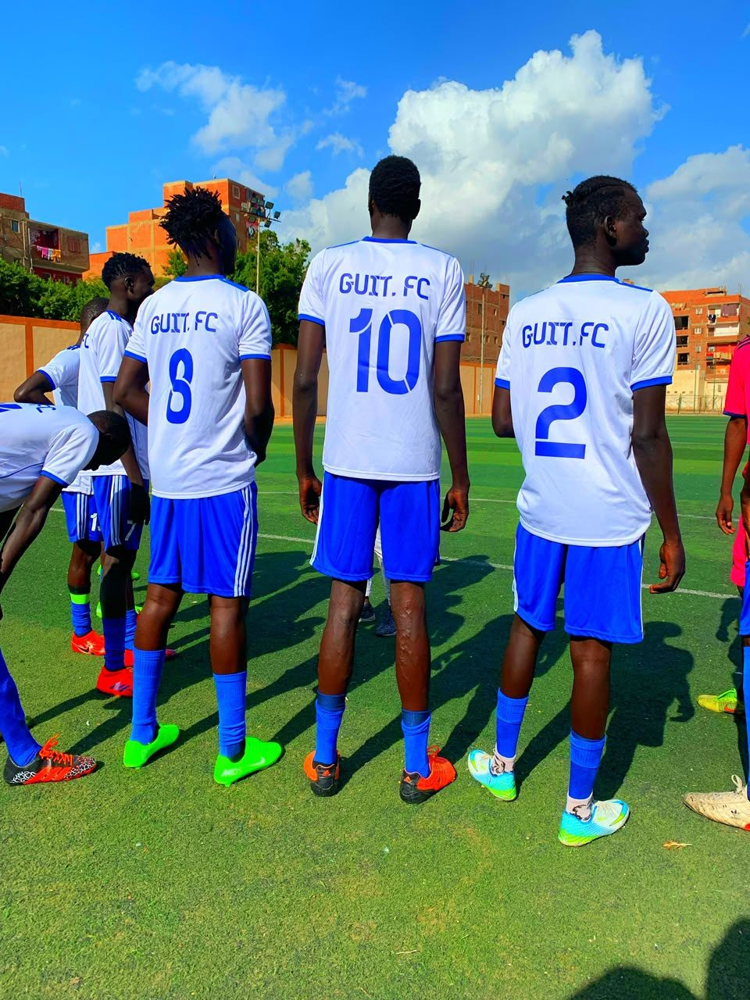

SportsGuit FCCairo · Nov 2022
Launching Guit FC, our community football team
In 2022 the Jikany Community in Egypt formed its first football team, Guit FC, under my leadership as chairman. On 25 November 2022 the community presented the players with their new white-and-blue uniforms — and the team was ready to take on other teams in Cairo.
Formed 2022 · uniforms 25 Nov 2022
Football team